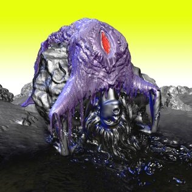

بقلم إسماعيل فايد

غلاف ألبوم بيورك "Vulnicura" (2015)
"هي اسطوانة انفصال"- تصف "بيورك" اسطوانتها الأخيرة "فالنيكورا": أحد أكثر أعمالها ارتباطاً بها بعد انفصالها عن شريكها الفنان البصري "ماثيو بارني" العام 2013.
يعود بنا "فالنيكورا" إلى أهم فترات إنتاجها (1997 – 2004) عندما أصدرت (بالترتيب) "Homogenic" (1997)، و"Vespertine" (2001)، و"Medúlla" (2004). حيث نلاحظ في "هوموجنك"، على سبيل المثال، بداية اهتمامها في مزج الوتريّات بالموسيقى الإلكترونيّة، وبتقديم الإيقاعات المجرّدة، لتنتقل في "فسبرتين" إلى استخدام الوتريّات بشكل غير تقليدي (خاصة الهارب مع العازفة "زينا باركنز")، واستخدام الآت تم تصنيعها خصّيصاً من أجل العمل.
هذا ما يتّضح في حديثها عن العمل: إذ أرادت صناعة نسيج من إيقاعات الحياة اليوميّة (مثل صوت النقر على الطاولة، مزج أوراق، أو الوشوشة) وتجميعها ومزجها ثم تضخيمها بشكل مبالغ فيه. وذلك كجزء من رؤيتها لخلق حالة حميميّة (أصوات الداخل (الوشوشة) أو أصوات المنزل أو المساحة الشخصية – أصوات النقر على أثاث على سبيل المثال). لتحقيق ذلك، استعانت "بيورك" بمبرمجي الصوت ومهندسي الصوت للتلاعب الرقمي وخلق ذلك النسيج السلس باستخدام تكنولوجيا التلاعب الصوتي، والذي دفع البعض لتصنيف العمل تحت اسم الموسيقى الإلكترونيّة رغم اختلاف خصائص الموسيقى والغناء. وفي إحدى المقابلات، دافعت "بيورك" عن استخدام التكنولوجيا في صنع موسيقاها، مؤكّدةً أنّها أداة وليست هدفاً أو فكرة تحكم العمل.
ومن مجازيّة نسج إيقاعات متناهية الصغر من الأصوات الحياتيّة، انتقلت "بيورك" لفكرة أكثر راديكاليّة في "مديولا" لخلق عمل كامل من أصوات بشريّة مختلفة (مغنّي البيت–بوكسينغ، الغناء الحلقي، جوقة من مغنّيي "الأنويت" وغيرها). لتسجّل أرشيفاً من أصوات متنوّعة للغاية (تنهّد، نخر، عويل، وغيرها)، مع استخدام بسيط جدا للكيبورد، والاعتماد، بدلاً منه، على التلاعب الرقمي والإيقاع والغناء المصاحب وصوت الطبول والطبقة الموسيقيّة المصاحبة، مستعيضةً عن جميع الآت الموسيقيّة بالتسجيلات المختلفة للمغنيين والموسيقيين المشاركين معها. حتى قيل أنها نحتت من مجّرد أصوات بشريّة مجالاً صوتيّاً متكاملاً.
العودة إلى الجذور في "فالنيكورا"
بالعودة إلى "فالنيكورا": يتّضح أن العمل نتاج التجارب الثلاث في "هموجنك" و"فسبرتين" و"مديولا". إذ تتّضح هنا أصداء استخدام الوتريّات بشكل رئيسي، لتشكّل أول ثلاث أغانٍ أصداءً لـ"هموجنك" (وخاصة أغنية مثل "Unravel" من "هموجنك") بشكل أو بآخر. تدرج "بيورك" في رسم مسار انهيار علاقتها مع "ماثيو بارني" حتى تصل لأطول أغنية في الألبوم "Black Lake"، والتي تتكشّف موسيقيّاً على فترة زمنية مدتها عشرة دقائق تتخلّلها نغمات تستمر لدقيقة أو أكثر مع إيقاعات المنتج والدي جاي "أركا" المضطربة.
وتظهر استخدام عدة تسجيلات صوتيّة (بدون موسيقى) فوق بعضها البعض بشكل يخلق تناغماً أو تنافراً مثيراً سمعيّاً مثلما فعلت في "مديولا" (في أغنية "Lionsong" وأغنيتها مع "Anthony Hayes" "Atom Dance"). وتتجلى أصداء "فسبرتين" في الإيقاعات الإليكترونيّة الخافتة لأول خمسة أغان والتي تركز بشكل أكبر على صوت "بيورك" ومحتوى ما تغنيه.
تصف بيورك الأغاني وعلاقاتها بانفصالها عن طريق تسمية الأغاني الستّة الأولى بتوصيفات مثل "11 شهراً بعد الانفصال"، "خمسة أشهر بعد الانفصال" وهكذا. ثم تتيح المجال لتأثير "أركا" كشريك فنّي وزّع وأنتج الأربع أغان المتبقية، ويظهر ذلك بوضوح في تغير التأثير العام للتناغمات والإيقاع (ففي أول خمسة أغانٍ، والتي كتبتها وأنتجتها بيورك بشكل فردي تقريباً، تظهر تناغمات تتنافر موسيقيّاً وإيقاعات إلكترونيّة مضطربة– لكنّها متكتّمة بدرجة كبيرة. على عكس توزيعات "أركا" في باقي الأغاني).
عمل كاتب–أغنية في قالب طليعي
يمكن تصنيف "فالنيكورا" على أنّه "عمل كاتب–أغنية". ومن خلال تتبّع هذا التصنيف، نشأ هذا النوع من الإنتاج الموسيقي في بداية الستينيّات في الولايات المتحدة وبعض دول أوروبا مع ظهور جيل من الموسيقيين الذين استخدموا موسيقى بسيطة، وركّزوا بالأساس على محتوى وأداء الكلمات مع بدايات حركة الحقوق المدنيّة والحركات الطلابية آنذاك وأشهر هؤلاء "بوب ديلان"، "جوني ميتشل"، "كارلي سايمون"، وغيرهم، والذي غالباً ما يركز على جانب شخصي في حياة المغني/ المؤلف.
ولكن في حالة "بيورك"، ورغم اتخاذها موضوعاً غاية في الحميميّة (مثل انفصالها عن شريكها الشخصي)، إلا أنها لم تتخلّى عن مجمل تجاربها الموسيقيّة واستخدامها البارز لتكنولوجيات التلاعب والإعداد الصوتي من أول دمجها للتنافر البسيط للوتريات إلى تدرجها في استخدام الإيقاعات الإلكترونيّة إلى حد التشويه غير المكتمل للصوت والإيقاع لآخر أغنية في الاسطوانة، "Quicksand".
صوت بيورك والتعبير عن الألم
لعل الجزء الأكثر إبهاراً في "فالنيكورا" هو صوت "بيورك" وعلاقته بالموسيقى. إذ تنجح بيورك في استخدام صوتها بشكل يظهر قدرتها الفريدة في التعبير، فيتهدّج تارة، ويئن تارة أخرى، ويصيح ويتباكى. منوّعاً ما بين الخفوت والإلقاء، وما بين العويل والاختناق على تلك الخلفية من من الوتريّات الباكية البطيئة وإيقاعات خفيفة مضطربة (في الخمس أغانٍ الأولى).
وكلما تقاربت بيورك موسيقيّاً مع موضوع العمل (الانفصال أو الفقد) كلّما ظهر التعبير الصادق (حتى في اختيار الكلمات). وكلما جافت ذلك التوجه وتبنّت وجهة النظر الإيجابيّة (التنمية البشريّة قاتلها الله) ظهرت تلك التعبيرات التي تشبه عظات ابراهيم الفقي في تنميّة المهارات المهنيّة (مثل: "ففي الحب نكون أبديين، خالدين آمنين من الموت").
هناك شيء من السذاجة في هذا من النوع من الوعظ الذي يذكّرنا بخطاب حركات العصر الجديد والروحانيّات اللادينيّة. ولعل دافع بيورك وراء ذلك هو تقديم الجانب الآخر من تجربة، مثل الفقد أو الانفصال، ولكن الدقّة والتعقيد الذي التزمت به في الأغاني التي تناولت الجانب المؤلم والتعيس في أول خمس أغانٍ تم التخلّي عنه بشكل أو بآخر.
ورغم ابتعاد بيورك تماماً من حيث الموضوع والأسلوب عن عملها السابق "بايوفيليا"، إلا أن آثار موضوعات هذه الاسطوانة (من التركيز على علاقة الطبيعة بالموسيقى وبجسم الإنسان والصوت) ظهرت في اختيارها لبعض التشبيهات المجازيّة ("إنّني أضبط روحي بدقّة طبقاً لطول الموجة الكونيّة"، "صفّف هذا الظلام، نحو الضوء، حيث يطرّز الأوكسجين الراقص الهواء").
إنجاز نسوي في الموسيقى الطليعية
يمكن ربط ما فعلته بيورك في "فالنيكورا" من سرد تطوّر علاقتها بشكل صريح ومؤلم في كثير من الأحيان (ويظهر ذلك في اختيارها للكلمات مثل: "لحظات الصفاء الذهنية نادرة جداً، فيجب علي أن أسجّل تلك"، "كل جماع فعلناه سوّياً، [يظهر] في هفوات زمنيّة مدهشة"، "لقد سئمت من وساوسك الآخراويّة"، "كيف أغنّينا من هذا الأسى") بتاريخ طويل من أساطير الغناء مثل "جوني ميتشل" على سبيل المثال، ويصبغ على اسطوانتها صبغة نسويّة نوعاً ما، كمؤلّفة وملحّنة ومنتجة من صنف الطليعيّة الموسيقيّة (Avant-Garde)، والتي فرضت على دوائر صناعة الموسيقى وجهة نظر وتجربة كانت محورها امرأة لم تستعمل كليشيهات العلاقات الشخصيّة، أو لم تنجر إلى تعبيرات سطحيّة أو اختزاليّة لتجربة إنسانيّة غاية في التعقيد لا يمكن فهمها وتحليلها بسهولة.
لعل هذا يكون أهم إنجاز صنعته بيورك في هذا العمل، وذلك عبر تقديم شكل بديل للحديث عن المشاعر والعواطف الإنسانيّة، ولكن بطريقة تتحدّى ما هو متوقّع ومألوف، وباستخدام صوتيّات ومتكرّرات اصطناعيّة ورقميّة يفترض أنّها تحد من الجانب الإنساني والروح الإنسانيّة– إلا أنّها استطاعت قلب تلك الآية، لينسجم الاثنان ولو بشكل مؤقت وبصيغة، أقل ما يمكن وصفها، أنها مبهرة.
روابط
- https://www.youtube.com/watch?v=1iW8hvcIAJQ
- https://www.youtube.com/watch?v=NHz1j1RVm6M
- https://www.youtube.com/watch?v=wKNGL3ab-3k
- https://www.youtube.com/watch?v=MjpciqKoNdY
- https://www.youtube.com/watch?v=WgBbJKiRxmc
- http://www.vbox7.com/play:6a888e4287
- https://www.youtube.com/watch?v=R7MTU_VVsnA
- https://www.youtube.com/watch?v=E2nxCSTAq9c